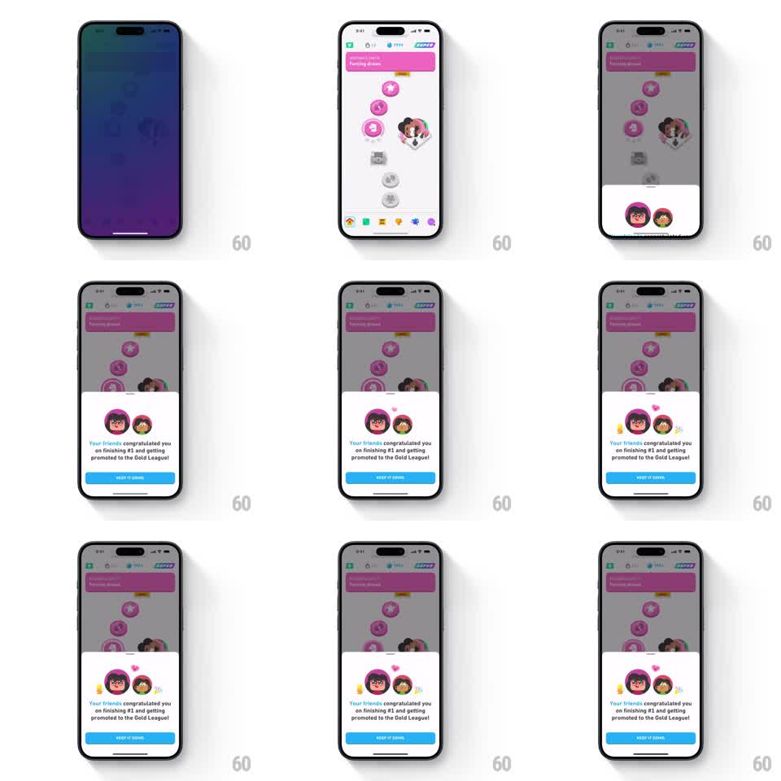

Media
Frame-by-frame

Rebuild this animation 1:1: Duolingo's friend-congrats bottom sheet - over the dimmed learning path, a white sheet springs up from the bottom carrying two celebrating friend avatars with party blowers and floating hearts, the message "Your friends congratulated you on finishing #1 and getting promoted to the Gold League!", and a blue KEEP IT GOING button.

Rebuild this animation 1:1: Duolingo's friend-congrats bottom sheet - over the dimmed learning path, a white sheet springs up from the bottom carrying two celebrating friend avatars with party blowers and floating hearts, the message "Your friends congratulated you on finishing #1 and getting promoted to the Gold League!", and a blue KEEP IT GOING button. ## Integration Integration: stack-agnostic spec - springs given as stiffness/damping, timed motions as duration + curve; map every value to your framework and animation library of choice. ## Scene The learning path screen (pink unit header "Describe your typical morning", path nodes, tab bar) dimmed under a 40% black scrim. The sheet: rounded top corners, two circular friend avatars side by side with party-blower horns and small pink hearts, one line of congratulatory copy, and a full-width blue KEEP IT GOING button. ## Motion spec Pattern: springy bottom sheet with celebratory avatar loop. - Scrim fades in (200ms). - The sheet slides up from off-screen with a spring (~280/20, overshoot ~8pt, settle ~400ms). - Avatars pop in staggered (left then right, 100ms apart, scale 0.6 -> 1.05 -> 1.0, spring ~350/18). - Party blowers unroll on a loop (extend over 250ms, hold 300ms, snap back, 400ms pause). - 3 small hearts float up from between the avatars (translateY -24pt, fade out, 1.2s, staggered 300ms, looping). - Copy fades up (200ms, delayed 150ms after sheet lands); button fades in last (150ms). - Dismissal: sheet slides down past the bottom edge (250ms ease-in), scrim fades out. ## Calibration - The sheet's spring overshoot is the personality - one visible bounce, then dead still. - The avatar loop runs independently of the sheet motion and never stops while the sheet is up. ## Reduced motion Sheet fades in over 200ms without travel or bounce; avatars static; no hearts loop. ## Don't miss - The hearts originate between the two avatars, not from the button or the text. - The path behind stays dimmed and inert - no scroll bleed through the scrim.